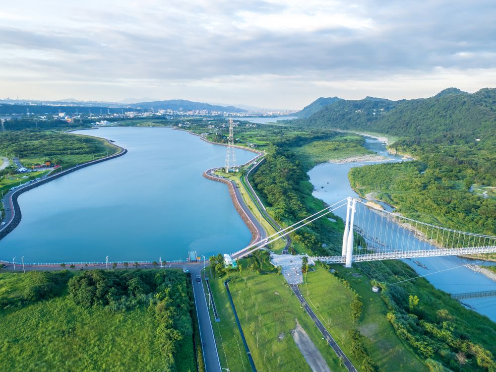
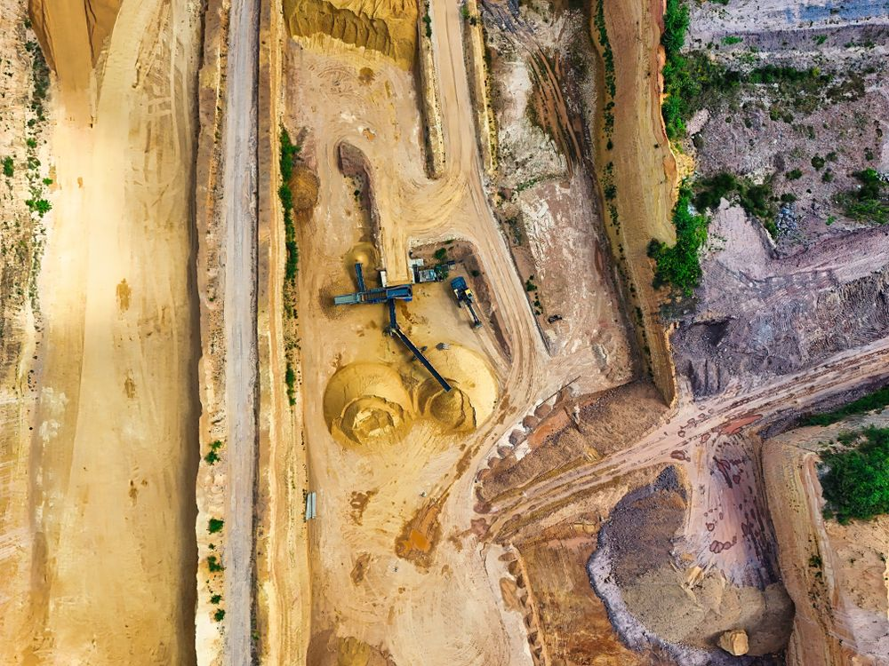
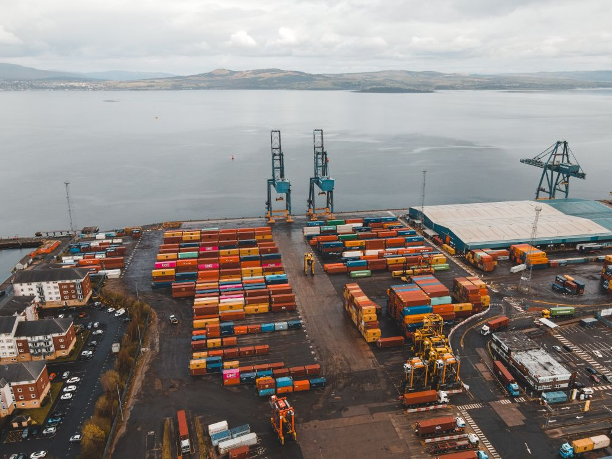
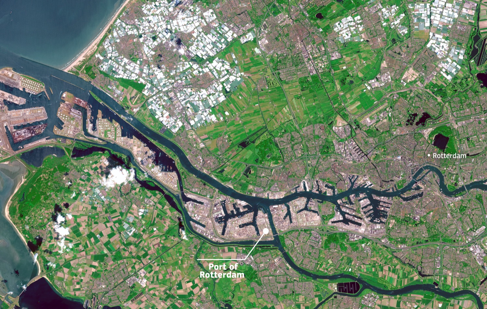
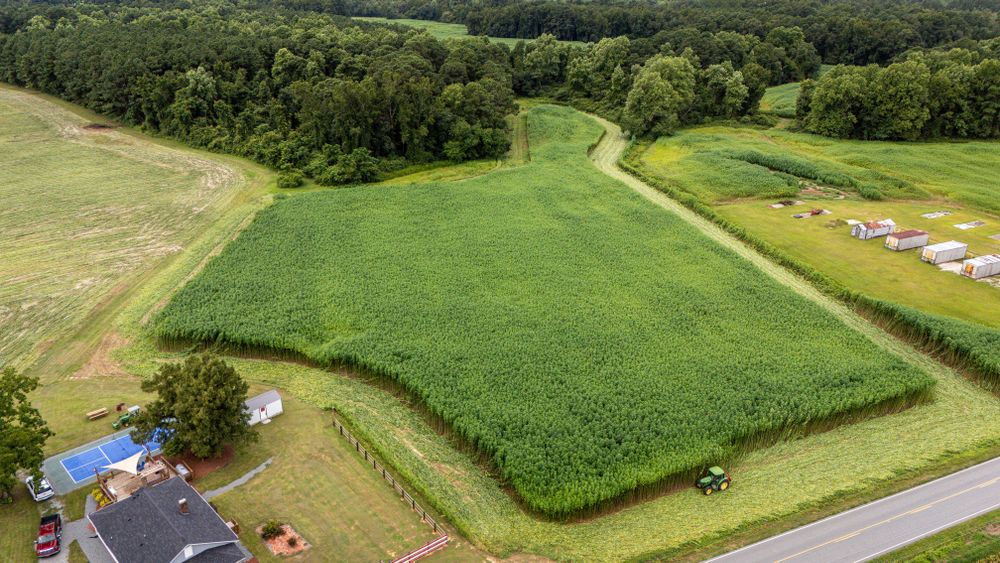
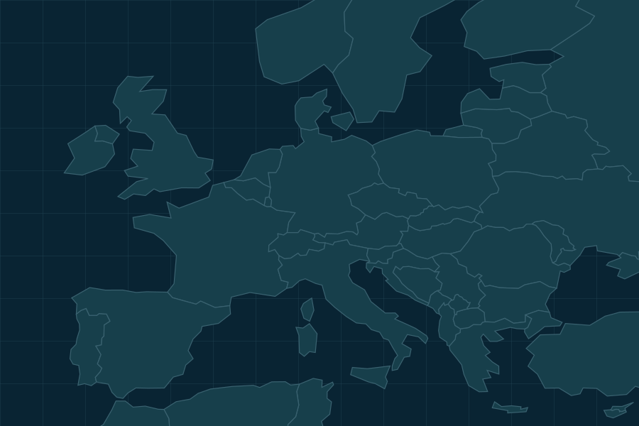

Warunki w regionie dostawcy wymagają uwagi.
CYFRYZACJA I ANALITYKA DLA MŚP
Zacznij od ryzyka.
Rozwijaj cyfrową firmę.
Złożone dane. Jasne wnioski dla Twojej firmy.
Zaawansowana analityka, AI i wiedza z satelitów — bez własnego zespołu analityków i budżetu korporacji. Rozwijamy OrbitOps, by łączyć rozproszone dane w jednym miejscu i przekładać je na jasne wnioski, wczesne ostrzeżenia i konkretne działania.
Dostępna analitykaProstsza cyfryzacjaWiększa przewidywalność
OrbitOps w rozwoju
OBSERWACJA ZIEMIDAYLIGHT
Region obserwacji
PRZYKŁADOWY SYGNAŁ · DANE DEMONSTRACYJNEIntensywne opady w regionie dostawcy.
Co może to oznaczać dla Twojej dostawy?
WykryjOceńRekomendujDziałaj
+
WIZUALIZACJA KONCEPCYJNAAnimacja 3D · dzienna Ziemia · przykład ilustracyjnyObserwacja Ziemi.Dzienny obraz. Szersza perspektywa.
- 01Połącz własne dane
- 02Zrozum ryzyko i możliwości
- 03Planuj i usprawniaj operacje
OBSERWACJA KONTEKST DZIAŁANIESpójrz bliżej ↓
DOSTĘP DO DANYCH. RÓWNE SZANSE.
Zaawansowana analityka nie powinna być przywilejem dużych firm.
Duże firmy inwestują w zespoły analityków, AI i dane satelitarne. W wielu MŚP informacje nadal krążą między Excelem, telefonem i skrzynką mailową.
Pomagamy również firmom w pozyskiwaniu dofinansowania na wdrożenie i rozwój AI oraz cyfryzację procesów biznesowych.
Dlatego tworzymy OrbitOps| Wskaźnik | Polska | UE |
|---|---|---|
| Podstawowa cyfryzacjaMŚP o co najmniej podstawowej intensywności cyfrowej | 59% | 71,4% |
| Analityka danychPrzedsiębiorstwa korzystające z analityki danych | 24,5% | 39,9% |
| Sztuczna inteligencjaPrzedsiębiorstwa korzystające z AI | 8,4% | 20% |
Źródło: Komisja Europejska, Digital Decade 2026 · Poland, DESI 2026.
Zakres danych i data weryfikacji
Rok odniesienia: 2025. Pierwszy wskaźnik dotyczy MŚP (10–249 pracujących); analityka i AI — przedsiębiorstw zatrudniających co najmniej 10 osób, w sektorach objętych badaniem. Porównanie Polski i UE, nie małych i dużych firm. Weryfikacja: 11.11.2026.
NASZA MISJA
Nie brakuje nam danych.
Brakuje sposobów, by z nich korzystać.
Demokratyzujemy dostęp do danych i dajemy firmom narzędzia, by lepiej je rozumieć. Analityka, AI i wiedza satelitarna powinny wspierać każdą firmę — w codziennych decyzjach, sprawniejszej pracy i budowaniu odporności.
DZIŚ W WIELU MŚP
Informacje osobno.
Pliki ExcelTelefonyZagubione maileRęczne notatki
Ręczne raporty. Niepełny obraz.
Z ORBITOPS · NASZ KIERUNEK
Informacje połączone.
Jeden obraz firmy · wyjaśniony przez AI
Alerty ryzykaZapasyDostawcyKlienci
Zrozumiałe wnioski. Wcześniejsze ostrzeżenia. Konkretne działania.
WYZWANIE
Cyfryzacja zaczyna się od danych, które już masz.
Zapasy w Excelu, zamówienia w systemie, terminy w mailach. Pierwszy krok to połączyć te informacje w jednym, zrozumiałym środowisku. Kolejny — zestawić je z sygnałami ze świata: pogodą, transportem czy zmianami w otoczeniu dostawców. Tak budujemy podstawę do codziennej pracy z danymi, także w firmach, które dopiero zaczynają cyfryzację.
Zobacz przykład decyzji
Zjawiska w regionie dostawcy lub na trasie mogą zmienić warunki realizacji dostawy.

Zmiany w otoczeniu lokalizacji mogą sygnalizować ryzyko dla dostępu do surowców.

Zakłócenia w portach, na drogach i w infrastrukturze mogą wpłynąć na terminowość dostaw.
TWÓJ KONTEKST. KONKRETNA DECYZJA.
Dostrzeż ryzyko wcześniej. Zyskaj czas na reakcję.
Prognoza intensywnych opadów to dopiero sygnał. W połączeniu z terminem dostawy, poziomem zapasu i planem produkcji pomaga odpowiedzieć: co może się opóźnić, jak wpłynie to na firmę i co warto zrobić? To przykład, jak zrozumiałe dane wspierają odporność biznesu i bardziej przewidywalne planowanie.
PRZYKŁAD ILUSTRACYJNY · FIKCYJNE DANE I LOKALIZACJE
REGION / DOSTAWCA → FABRYKA
Prognoza opadów w regionie dostawcy.
PROGNOZA · OPADY
Dostawa do sprawdzenia
Dostawca AMagazyn i rampy
Twoja fabrykaZakład produkcyjny
Dostawca Fabryka Relacja dostawy Prognoza opadów
Przeciągnij model, aby zmienić widok.
Lokalizacja dostawcy · powiązana dostawa · obszar sygnału. Model poglądowy — nie przedstawia bieżących zagrożeń.↗ N
PRZYKŁAD / DOSTAWY01—03
CO CHCESZ SPRAWDZIĆ?
Potwierdź status i termin dostawy u dostawcy.
Możliwe działania · przykład, bez wysyłania zgłoszeń.Zapytaj, czy towar jest gotowy do odbioru i czy termin wymaga aktualizacji.
i
Prognoza, obserwacja terenu i wniosek o wpływie to różne informacje. Łączymy je z kontekstem firmy.
Lokalizacja dostawcy łączy sygnał z Twoją firmą.
Sprawdź możliwe działania, zanim podejmiesz decyzję.
ROZWIĄZANIE
Zaawansowana analityka.
Zrozumiała na co dzień.
Zaczynamy od ryzyka, ale patrzymy na całą firmę. Rozwijamy OrbitOps, by porządkować dane o zapasach, dostawcach, klientach i zamówieniach, łączyć je z sygnałami z otoczenia i wyjaśniać ich znaczenie za pomocą AI. To pierwszy krok do codziennej pracy z danymi.
Zobacz, jak to działa
Ocena możliwego wpływu
Działania do rozważenia
Kontekst Twoich dostaw
DLA KOGO TWORZYMY ORBITOPS
Dla firm, których produkcja zależy od materiałów i pewnych dostaw.
01
Tworzywa i opakowania
Surowce i import. Dostępność zapasów. Ciągłość produkcji.
Powiąż terminy dostaw z zapasem, zanim zabraknie materiału na produkcję.
02
Metale i produkcja
Ceny materiałów. Zależności od dostawców. Opóźnione dostawy.
Zobacz, które zmiany u dostawców mogą wpłynąć na koszty i realizację zamówień.
03
Drewno i meble
Pozyskiwanie materiałów. Trasy transportu. Dostępność surowca.
Połącz źródła zaopatrzenia i transport z potrzebami swojego zakładu.
ZASTOSOWANIA
Co może wpłynąć na Twój plan produkcji?
Pogoda, surowce i transport mają znaczenie wtedy, gdy łączą się z Twoimi zamówieniami, zapasem i zobowiązaniami wobec klientów. Sprawdź przykłady sygnałów, które warto uwzględnić w planowaniu.
Ryzyka pogodowe
Połącz prognozę dla dostawcy z terminem dostawy i zapasem w swojej firmie.
PorozmawiajmyZasoby i surowce
Zestaw dostępność surowca, zużycie i plan produkcji, aby wcześniej dostrzec możliwy niedobór.
PorozmawiajmyTransport i infrastruktura
Sprawdź, które zdarzenia na trasie mogą wpłynąć na Twoje zamówienia i zobowiązania wobec klientów.
Porozmawiajmy
Środowisko i teren
Powiąż zmiany wokół zakładów i dostawców z procesami, które są ważne dla Twojej firmy.
PorozmawiajmyZdjęcia ilustrują obszary zastosowań. Nie przedstawiają zdarzeń z przykładowego scenariusza.
PODGLĄD PLATFORMY
Jeden obraz firmy.
Jaśniejszy plan działania.
Zobacz na przykładzie dostaw, jak rozproszone informacje mogą stać się wspólnym obrazem sytuacji. Wybierz sygnał, poznaj jego możliwy wpływ i sprawdź proponowane działania. Pełne demo pozwala też porównać warianty decyzji oraz powiązać je z zapasami i potrzebami produkcji.
INTERAKTYWNA MAKIETA · DANE SYNTETYCZNEPRZYKŁADOWA SIEĆ / EUROPA
SCENARIUSZE POGLĄDOWECo wymaga Twojej uwagi?
Przykładowa sieć dostaw — 6 lokalizacji, 3 scenariusze, 1 relacja wymagająca sprawdzenia.
Mapa zależności6 lokalizacji

REGION DOSTAWCY AOpady wymagające uwagi
Lokalizacja Relacja dostawy Obszar sygnału
DOSTAWCA / LOKALIZACJAKONTEKSTSTATUS
A Dostawca A Rotterdam, NLPrognozowane opadyDo sprawdzenia
B Dostawca B Hamburg, DEWarunki transportuScenariusz demo
C Dostawca C Mediolan, ITPrognozowany upałScenariusz demo
D Dostawca D Brno, CZRelacja operacyjnaScenariusz demo
Lista przedstawia fikcyjną sieć dostaw. Nie zawiera danych rzeczywistych firm.
TWÓJ NASTĘPNY KROK
0 z 3 sprawdzonychOd informacji do działania.
Lista działa lokalnie w tej makiecie. Zaznaczenia nie są wysyłane ani zapisywane w systemach firmy.
6Lokalizacji w przykładzie
3Scenariusze ryzyka
1Relacja do sprawdzenia
TwojaDecyzja operacyjna
Chcesz porozmawiać o podobnym widoku dla swojej firmy?Porozmawiajmy
TECHNOLOGIA Z SZERSZĄ PERSPEKTYWĄBliżej realnych wyzwań.
O NAS
Technologia blisko codziennych potrzeb firmy.
Budujemy OrbitOps z myślą o osobach, które prowadzą firmę i potrzebują jasnych odpowiedzi. Łączymy perspektywę biznesową z analityką i technologiami kosmicznymi.
Za kierunek produktu i rozwój biznesowy odpowiada założycielka z doświadczeniem w zarządzaniu transformacją technologiczną, portfelem inicjatyw i rozwojem produktów. Rozwiązanie rozwijane jest we współpracy z kompetencjami technologicznymi i geospatial.
Demo przedstawia przykładowe scenariusze na danych demonstracyjnych.
SKONTAKTUJ SIĘ Z NAMI
Pierwszy krok do cyfrowej firmy? Zacznijmy od rozmowy.
Nie musisz mieć uporządkowanej bazy danych ani gotowego planu cyfryzacji. Opowiedz nam, jak dziś pracujesz, gdzie przechowujesz informacje i które decyzje są najtrudniejsze. Wspólnie sprawdzimy, od czego warto zacząć i jak OrbitOps mógłby wesprzeć Twoją firmę.
Plan na kolejny krok.
NAPISZ BEZPOŚREDNIOkontakt@orbitops.eu
Od czego możemy zacząć?
Od krótkiej rozmowy i wyboru jednego przypadku operacyjnego, który warto przeanalizować.
Jakie informacje przygotować?
Wystarczy branża, rodzaj problemu i ogólny opis lokalizacji lub przepływu. Nie przesyłaj poufnych danych firmy na tym etapie.
Czy zgłoszenie oznacza rozpoczęcie pilotażu?
Nie. Najpierw wspólnie ocenimy problem, dostępność danych i możliwy zakres testu.